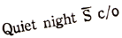

BRUNSWICK SHRINE
In the Los Angeles suburb of Whittier there lives a bowling alley, and within this very place, in the Year of Our Lady of Discord 3125 (1959*), Eris revealed Herself to The Golden Apple Corps for the first time.
In honor of this Incredible Event, this Holy Place is revered as a Shrine by all Erisians. Once every five years, the Golden Apple Corps plans a Pilgrimage to Brunswick Shrine as an act of Devotion, and therein to partake of No Hot Dog Buns, and ruminate a bit about It All.
It is written that when The Corps returns to The Shrine for the fifth time five times over, than shall the world come to an end:
IMPENDING DOOM
HAS ARRIVED
And Five Days Prior to This Occasion The Apostle The Elder Malaclypse Shall Walk the Streets of Whittier Bearing a Sign for All Literates to Read thereof: "DOOM", as a Warning of Forthcoming Doom to All Men Impending. And She Shall Signal This Event by Seeking the Poor and Distributing to Them Precious MAO BUTTONS and Whittier Shall be Known as The Region of Thud for These Five Days.
As a public service to all mankind and civilization in general, and to us in particular, the Golden Apple Corps has concluded that planning such a Pilgrimage is sufficient and that it is prudent to never get around to actually going.
____________________
* Or maybe it was 1958, I forget.